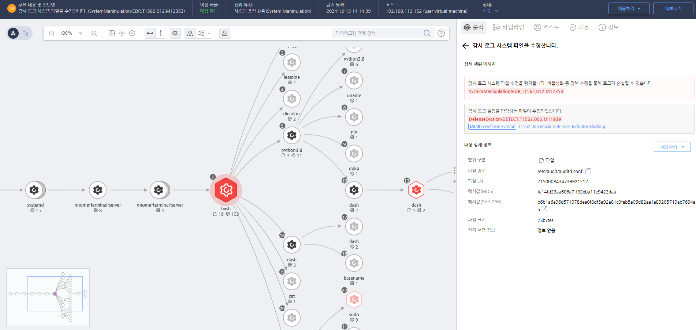

T1562.012.01 리눅스 감사 시스템 비활성화
D3FEND
MITRE ATT&CK 액션을 기준으로 대응 방안을 작성
Detection
모니터링을 통해 'audispd'와 'Auditd'에 대한 변경을 탐지합니다.
Detection(EDR)

https://172.18.10.125:8903/#/analysis/incident/675bc320002dc79500000ced
Response
공격자가 수정한 파일을 원복합니다.
Mitigations
보안 도구 무결성 보호 (M1040 - Security Configurations)
- 보안 도구가 자동으로 복구될 수 있도록 설정하여, 도구가 비활성화되거나 중지되었을 때 자동으로 재활성화되도록 관리
- 보안 도구 설정 보호를 통해 도구가 무단으로 변경되거나 종료되지 않도록 설정하고, 변경 시 즉시 알림을 받을 수 있도록 구성
- 보안 도구의 자동 업데이트와 패치 관리를 통해 항상 최신 상태로 유지되도록 설정
액세스 권한 제한 및 제어 (M1045 - Restrict Access to Tools)
- 보안 도구의 설정을 변경하거나 종료할 수 있는 권한을 최소화하고, 관리자만 접근할 수 있도록 설정
- 다단계 인증(MFA)을 적용하여 보안 도구의 변경이나 비활성화가 승인된 사용자만 할 수 있도록 제한
- 보안 도구 종료를 포함한 관리자 권한을 가진 사용자에 대한 감사 및 모니터링을 강화
보안 도구 상태 모니터링 (M1033 - Process Monitoring)
- 보안 도구가 실시간으로 동작하는지 지속적으로 모니터링하고, 비정상적인 상태나 비활성화가 감지되면 즉시 경고가 발생하도록 설정
- 보안 도구의 동작을 모니터링하여 서비스 종료 시도나 구성 변경을 탐지하고 기록
- 모니터링 도구를 사용하여 보안 도구의 비정상적인 변경을 탐지하고, 변경 사항을 빠르게 대응할 수 있도록 설정
보안 도구의 무단 변경 방지 (M1055 - Secure Data Transmission)
- 보안 도구의 파일 및 설정에 대한 무결성 검증을 통해 무단으로 변경된 파일이나 설정을 즉시 탐지
- 디지털 서명을 활용하여 보안 도구의 구성 파일이 변조되지 않도록 보호
- 보안 도구 설정의 변경 내역을 기록하고, 변경된 사항에 대해 알림을 받을 수 있도록 구성
보안 패치 및 업데이트 관리 (M1047 - System Logging & Monitoring)
- 보안 도구의 자동 패치 관리를 설정하여 정기적인 보안 업데이트와 취약점 해결을 자동화하고, 최신 상태로 유지
- 보안 도구의 업데이트 및 패치 기록을 관리하고, 패치 이력을 점검하여 모든 보안 도구가 최신 보안 패치를 적용받았는지 확인
- 보안 도구의 업데이트 상태를 정기적으로 모니터링하여 최신 버전으로 유지
침해 사고 대응 계획 (M1031 - Network Segmentation)
- 보안 도구 비활성화가 발생했을 때 즉시 대응할 수 있도록 침해 사고 대응 계획을 수립하고, 모의 훈련을 통해 대응 능력을 강화
- 침입 탐지 시스템(IDS) 및 침입 방지 시스템(IPS)을 활용하여 네트워크 내 비정상적인 트래픽을 탐지하고, 보안 도구 비활성화 시도를 실시간으로 차단
- 실시간 경고 시스템을 통해 보안 도구 비활성화 시도를 신속히 탐지하고, 대응할 수 있도록 설정
Affected Techniques
Action 실행시 함께 영향을 받는 다른 Techniqes
| D3FEND |
| D3-SDM System Daemon Monitoring |
| D3-FIM -File Integrity Monitoring |
| D3-USICA User Session Init Config Analysis |
| D3-SICA System Init Config Analysis |